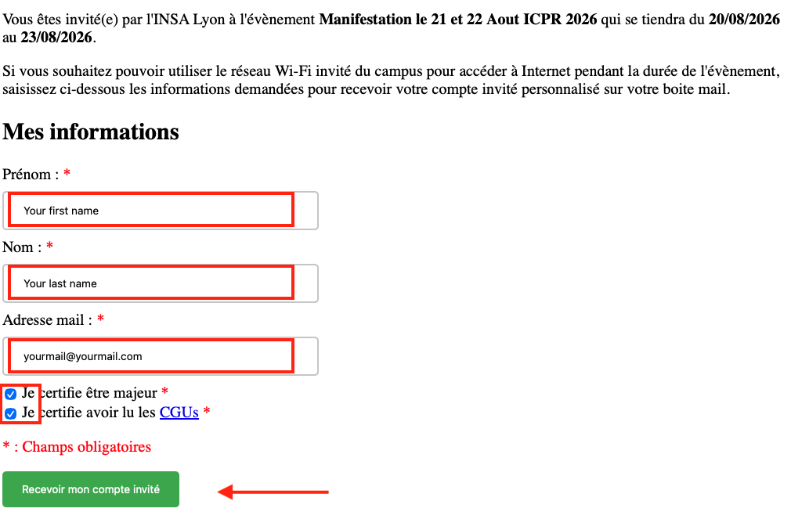
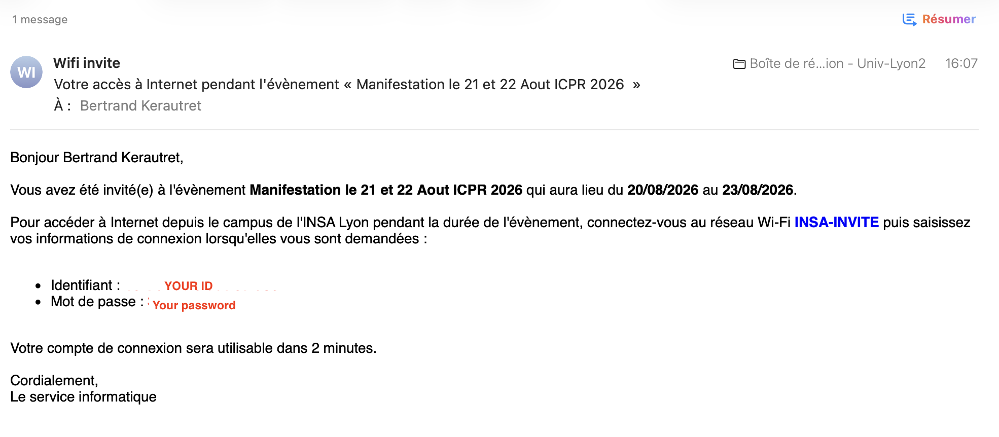

Free Wi-Fi is available throughout the conference center.
Wi-Fi is available in the Louis Néel Building, where the workshops take place, through one of the following options:
To request a guest account, please complete this online form. The form is available only in French. Please refer to the guide below when filling it out.

